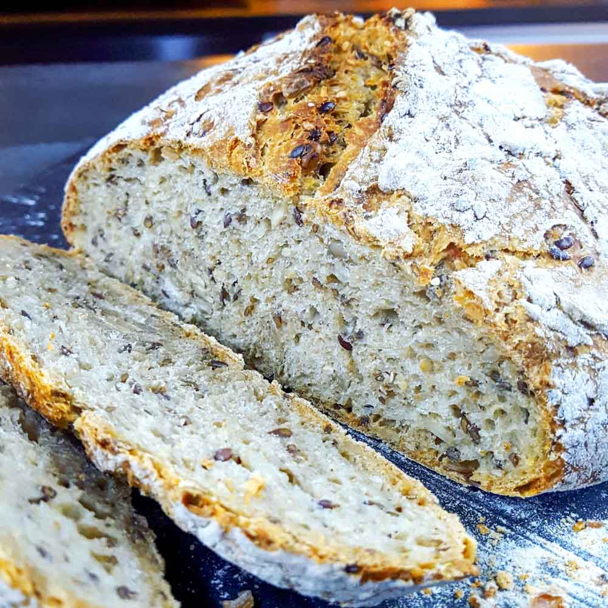

Le pain au levain

Description :
Une recette de pain au levain que j'ai mise au point après de multiples essais ainsi qu'à l'aide d'astuces
glanées ici et là.
Ingrédients
Pour un kilo de pain :
-
600 grammes de farine. Repartis par exemple entre :
- 300g de farine de blé T80
- 200g de farine de blé T110
- 100g de farine de seigle complète
- 400 grammes d'eau,
- un grand bol de levain,
- 12 grosses pincées de sel (environ 12g),
- vous pouvez ajouter des graines à votre discrétion !
Étapes
-
S'assurer que la somme de la température de l'eau, de la farine et de l'air est comprise entre 65°C et 70°C
;
-
Si ce n'est pas le cas, chauffer un peu l'eau si elle est trop froide. Sinon si elle est trop chaude
la tirer directement du robinet (en temps normal il est recommandé de la laisser reposer dans une
carafe avant de l'utiliser pour laisser s'évaporer le chlore) ou placer la carafe au frigo.
-
Mettre les farines dans un grand plat ;
-
Ajouter le sel ;
-
Bien mélanger le tout ;
-
Ajouter l'eau ;
-
Mélanger l'eau et la farine sans pétrir (pas plus de 5 minutes sur cette étape) ;
-
Laisser reposer 15 à 30 minutes (cela peut être plus mais je ne vois pas de différence notable au delà de
cette durée). Cette étape se nomme autolyse et va nous permettre d'avoir une pâte bien souple et élastique à
pétrir ;
-
Pétrir pendant une quinzaine de minute (c'est prêt quand la pâte devient homogène et très légèrement aérée).
Ne pétrissez pas trop longtemps, c'est contre productif ;
-
Laisser reposer de 4 à 8 heures selon la température ambiante (plus il fait chaud plus la pâte lève vite) ;
-
Mettre une coupelle d'eau préalablement élevée à ébullition dans le four puis le faire préchauffer à 250°C ;
-
Façonner puis mettre de côté dans un plat ou sur un plan de travail selon la forme désirée (pour faire
plusieurs pain à la fois je trouve ça plus simple de le faire cuire dans un moule) ;
-
Attendre que le four soit chaud et que l'eau dans la coupelle soit à nouveau à ébullition puis y insérer le
pain ;
-
Laisser cuire une quarantaine de minutes en abaissant progressivement la température du four à 220°C (par
exemple : 10 minutes à 250, 10 à 235 et 20 à 220) ;
-
Sortir le pain du four et le laisser refroidir à l'air libre pour ne pas que la mie ramollisse ;
-
Vous pourrez manger le pain une fois refroidi (attention aux éventuels maux de ventre si vous le mangez
encore chaud).